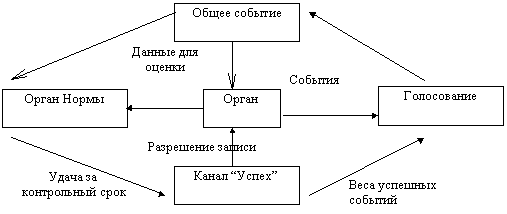

Обучение состоит в заполнении таблицы правильных ответов на входные вопросы. Чем меньше эта таблица, тем быстрее происходит случайное обучение. "Малость" таблицы обеспечивается оптимальным устройством преобразователей физических величин в код (сенсоров) и кодов в физические действия (эффекторов).
Рабочий дневник 1998c
04 марта 1998. Селекция событий.
Для каждого события, узнанного хотя бы одним каналом, суммируем веса. Если событие не узнано, то вес W=0. Если канал узнал событие, то он может присвоить ему внутренний вес "надежность узнавания" Wi. Кроме того, сам канал C имеет вес "важность" или "доверие к каналу C" Wc для лидирующего канала. Таким образом, для лидера вес события в канале равен Wi*Wc.
Система уточнения весов должна работать как при различных Wi, так и при всех Wi=1. А также при различных Wc, и при равных Wc. Если начальные веса Wc заданы неверно, то со временем они должны вернуться к верным значениям, обеспечивающим максимально успешное поведение.
Если критерием узнавания считать узнавание события всеми каналами, или хотя бы одним каналом, то веса не нужны вообще. Если происходит в точности то же событие, что и раньше, то все его узнают, и суммарный вес у такого события будет максимальным. Можно его и не вычислять.
Система взвешивания каналов нужна для разрешения сомнений в условиях, когда происходит похожее, но не точно такое, как ранее, событие. Если событие узнается не всеми каналами, то надо прислушиваться к мнению более авторитетных "важных" каналов, и не надо обращать внимание на мнение, тех каналов, которые обычно ошибаются, или мнение которых маловажно для достижения успеха.
После того как выбраны "объективно" узнанные события, их номера сообщаются всем каналам для выполнения характерных для этих каналов действий. Этот набор узнанных событий можно считать командой, а действия каналов - исполнением команды. Обычно - это прогноз следующего хода. Лидер не знает, что делают каналы!
Сразу после исполнения команды каналами лидер получает сообщение из канала Pleasure (или Удовлетворение, Норма). Этот канал сообщает список ожидавшихся величин Удовольствия (Удовлетворения) с вероятностями, и фактически полученный результат. Если результат угадан верно, то повышаем веса тех каналов, которые внесли решающий вклад в правильный прогноз. Если результат угадан неверно, то уменьшаем веса таких каналов. Это надо делать с учетом вероятностей и степени верности (неверности). Система уточнения весов должна правильно работать как при участии всех каналов, так и при участии только части каналов в принятии решения об узнавании текущего события. Для общности можно считать, что узнаются все события, и участвуют все каналы, но некоторые веса равны нулю.
Таким образом, система имеет две цели: отбор наиболее успешных поведений, и наиболее точное воспроизведение своего успешного поведения. Критерий точности воспроизведения - точное предсказание своего удовлетворения.
Не надо связывать вес канала с достижением максимального успеха, так как на фоне уже освоенного лучшего поведения ещё лучшее поведение может быть получено только случайно . Тактика поиска ещё лучшего поведения основана на том, что система способна к воспроизведению своих ранее достигнутых успехов, и при этом выполняет небольшой случайный поиск. Лучшие опорные поведения выбираются по признаку максимальных прошлых успехов. А способность не потерять прежнее хорошее поведение обеспечивается точным узнаванием событий. Вот для этого и нужны веса. Причём точность узнавания оценивается только по точности прогноза в канале Удовлетворение не зависит от того, лучший или худший результат получен в данный момент. Важна только точность угадывания, и оценить её может только лидер. Точность в других каналах, кажется, оценивать не надо.
Для лидера не должно иметь значения количество каналов. Может канал всего один, а веса - это внутренние оценки узнавания этого единственного канала. А может, все каналы самоуверенны, и всегда выдают внутренний вес 0 или 1. Лидер только оценивает, что для повышения надежности прогноза вес некоторых событий надо бы увеличить, а некоторых - уменьшить.
Научное определение информации по Шеннону (Shannon).
Если канал узнает 1000 событий, а по результатам голосования оказывается, что только 10 из них похожи на прежние, а другой канал узнает 11 событий, и 10 из них верны, то вес второго канала должен быть больше. Допустим, какой-то канал узнает все те же события, которые дает голосование. Значит можно выкинуть все каналы, кроме этого одного. Он самый важный в узнавании. Но не в исполнении. Это другая задача.
Итак, информация - это мера определенности. Если 10 событий действительно похожи на текущее, и какой-то канал узнал ровно эти 10 событий, то он наиболее информативен, и W=1. Другой канал узнал всего 2 события, и только одно из них входит в эти 10. Его вес W=1/20. Другой канал узнал 1000 событий, и 10 из них правильно: W=1/100. Такая примерная оценка, наверно, может быть получена и без заранее определенных весов. Но правильнее уточнять веса постепенно.
Допустим, абсолютно точный канал продублирован в 1000 экземплярах. Его вес забьет все остальные каналы, и это правильно. А если такой канал всего один, а плохих каналов много, то их суммарный вес может превысить 1. Поэтому веса надо уточнять постоянно. Пусть они становятся как угодно больше или меньше единицы, лишь бы обеспечить самый точный прогноз в канале Удовлетворение. Важно, что нет алгоритма, который может со временем приравнять веса одинаковых (дублированных) каналов.
В процессе уточнения весов можно менять веса только значимых каналов. То есть, если изменение веса данного канала не изменило бы предыдущий прогноз, то такой вес и не меняем. Могут быть и другие варианты. Важно, чтобы система всегда шла "по кромке успеха", как говорит Крис.
10 марта 1998. Структура и функции адаптирующейся системы.
- Датчик. Мир <-- > Преобразователь. Физическое тело - это тоже часть мира.
- Память. Преобразователь <-- > Канал.
- Датчик нормы. Преобразователи -- > Анализатор нормы.
- Частное узнавание . Канал -- > Частное событие.
- Узнавание нормы. Прогноз Нормы и уточнение весов после проверки прогноза.
- Голосование. Частные события -- > Общее событие.
- Общее узнавание. Общее событие -- > Канал.
- Успех. Канал нормы -- > Контрольный срок, Уточнение весов -- > Запоминание каналами.
- Ввод. Ввод и сдвиг внутри контрольного срока или во всем протоколе.
- Забывание. Если нет успеха, то данные могут не запоминаться, или быстрее забываться.
Норма, или Wish, не отличаются от других данных. Веса и другие настройки делают в канале "Успех". Это "псевдоканал".
Функциональный блок "орган" или "нервный узел": Мир <-- > Преобразователь <-- > Канал -- > Частное событие.

Из общего события исходят команды. Они могут иметь уровень обязательности от 0, если канал действует автономно, до 1, при полном подчинении общему узнаваемому событию.
Эти рабочие записи содержат много ерунды, которую все же изменять не желательно. Надо составить логичный текст с описанием основных проблем и понятых механизмов сознания, а также с подходами к алгоритму. Этот текст должен быть внутренне согласован, и максимально соответствовать моей текущей позиции.
План подготовки текста:
- Просмотреть все свои рабочие тексты и статьи в конференции и найти важные темы и вопросы.
- Расположить их в логичной последовательности.
- Составить текст, раскрыв каждый пункт в одном, двух предложениях.
- Уточнить оглавление.
- Написать более подробное содержание.
Примерный план и содержание этого текста навскидку.
- Постановка задачи.
- Сознание - мотор адаптации. (веб страница)
- Общение со средой
- Какие действия кроме поведения необходимы системе
- Отношения ученика и учителя. Неизбежность отклика.
- Возможности адаптации у разных искусственных систем и алгоритмов.
- Нейронная сеть
- Компьютер
- Признаки самообучения у машин отсутствуют.
- Сравнение с животными. У животных есть творчество.
- Характерные признаки сознания. Тестовые задачи. Конструктивные опыты с животными.
- Память. Ассоциативная память. Динамическая память.
- Подходы к алгоритму. Символьные и аналоговые данные. Семантический, статический и динамический подходы.
- Обобщение.
- Понятие
- Возможный биохимический алгоритм
- Возможный структурный алгоритм
- Квант обобщения - узнавание
- Анализ (результат –понимание) и синтез (результат – новое).
- Самообучение
- Скорость самообучения. Информационная насыщенность.
- Сходимость обучающего алгоритма.
- Эффективный стимул. Желание. Чувство нормы. Умышленное стимулирование учителем.
- Творчество
- Пример с Попугаем на 1 канале.
- Пример с бабочкой.
- Методические вопросы.
- Невозможность передачи данных между консолями разной физической природы.
- Проблемы долговременного запоминания. Что хранить? Что стирать?
- Проблема продумывания, принятия решения, планирования.
- Проблема N 2 . Проблема переполнения памяти. Естественные пределы. Узнавание в темпе восприятия.
- Глубина узнавания во времени. Чувство истории.
- Функция нейрона (канала) - это узнавание и прогноз.
- Любой нейрон функционально подобен мозгу.
- Важность каналов.
- Второстепенность точного прогноза по сравнению с выгодным прогнозом.
- Механизм ассоциативного запоминания и научения.
- Механизм повторения за учителем.
- Узнавание своих качеств в других объектах - признак осознавания себя. Повторение за собой.
- Синтез вслепую, только по оценке. Тест на конструктивность желания.
- Что такое бессознательное поведение. Автоматизация поведения. Разгрузка сознания.
- Обучение за ручку. Обучение кодированием. Обучение органов.
- Синхронизация и её биологическое решение.
- Технология преобразования чисто ассоциативных данных в синхронно-ассоциативные, и наоборот. Нога накапливает новый опыт сначала без ассоциативной связи с новым телом. Уровень команд 0. Затем уровень команд тела постепенно повышается до 1.
- Формирование целенаправленного поведения.
- Формирование смыслов и осознаваемых смыслов. Сознание трудится над тем, что пока не имеет смысла. Смысл механизирует поведение.
- Синтез автоматического поведения. Роль сна.
- Осознавание себя. Осознавание подобных себе.
- Статистическая интерполяция. Выбор "события" на основе списка с весами. Аналоговая и символьная информация.
- Безопасное добавление (изъятие) нейрона (канала, органа). Растущий мозг.
- Внутренний диалог. Шахматный прогноз.
- Структура адаптирующейся системы.
- Структура нейронной сети
- Структура существа
- Чувства. Страх, надежда, уверенность, сомнение, ожидание, удовлетворение.
- Перспективы.
- Сканирующее зрение.
- Распознавание речи в смысле понимания, а не превращения в текст.
- Речь.
- Переселение сознания в новое тело.
- Искусственная жизнь.
Желанием системы может быть точный прогноз. При этом она будет забиваться в угол. Но если система не имеет эффекторов, то такое желание создает хорошо прогнозирующую систему. В процессе её работы происходит только настройка весов, но никакого взаимодействия с миром нет. Так можно построить попугая, работающего без внешней оценки. Он может предсказывать следующую фразу, как мой попугай от декабря 1996. Попугай говорит и слышит, что он сказал. Собеседник может поставить оценку, которая должна цениться дороже, чем точность прогноза. Далее попугай предсказывает, что должен сказать собеседник. Собеседник говорит, и попугай ставит себе оценку за точность угадывания. Этот диалог может легко выродиться в глупость типа забивания в угол.
Можно дать любой системе слабое желание точного прогноза, если все другие желания удовлетворены. Это верный путь к "психическому" расстройству.
11 марта 1998. Структура, обеспечивающая продумывание.
Как можно устроить инерционность семантического вывода "не продумав, не говори". Допустим, попугай говорит как бы сам с собой, фразу за фразой, и только если какая-то его реплика начинает настойчиво повторяться, то он произносит её вслух. Это похоже на продумывание в словах, как это делают люди. Есть "внутренний слух" и "физический слух". Этот вопрос происходит из давней проблемы "как заставить попугая молчать"?
Он будет молчать, если обнаружит, что такое поведение выгодно. Например, если болтовня мешает сосредоточить внимание на важных событиях, или снижает внешнюю оценку его поведения.
Ускоренное продумывание было бы легче устроить, если научиться присваивать имена событиям, то есть отображать события через более короткие. Еще один резерв для продумывания - автоматическое исполнение.
При надежном узнавании лидер может отдать команду, чтобы каналы сделали "прогноз" на 40 ходов вперед. Некий промежуточный стек в каждом канале берется выдавать эти 40 ходов в правильном темпе исполнительным механизмам. А лидер в это время организует продумывание в произвольном темпе без выдачи команд преобразователям. Это внутренний аналог инерционности исполнительного механизма.
Надежное узнавание возможно, если сам узнаваемый объект стабилен. Таким образом, стабильность объектов может позволить разгрузить мозг для освобождения ресурсов, нужных для продумывания. Что это за ресурсы? У меня мозг и так не слишком перегружен. Как продумывание может помочь принимать более правильные решения?
Продумыванию в ускоренном темпе мешает синхронная память. Из-за этого в продумывании должны участвовать все каналы одновременно , что мне не очень нравится. Могут ведь быть процессы, от которых нельзя отвлечься, но они требуют не более 0.001 части ресурсов системы.
Значит, нужно обеспечить продумывание только в некоторых каналах. Например, канал речи у человека почти всегда свободен - вот его и используем для продумывания.
Если прогноз не надежный, то система должна действовать осторожно, обдумывая каждую деталь. А если прогноз надежный, то запускается автоматическое исполнение. В это время происходит отвлеченное обдумывание (фантазирование). Оно может заключаться в переборе разных вариантов будущего. Если выяснится, что есть лучшее решение, чем то, которое в данный момент автоматически исполняется, то можно попробовать изменить решение.
Продумывание, это когда я исполняю один процесс, но уже знаю (и осознаю), что буду делать через 10 минут, или после завершения некоторого события.
Продумывание, это когда я принимаю решение, учитывая то, что произойдет через 10 минут.
Если механизм исполнения инерционный, то действие, которое я должен делать сейчас, надо было запустить 10 секунд назад. Я должен предвидеть, что надо делать через 10 секунд. Продумывание может привести к отмене запуска инерционного процесса. А если инерционности нет, то такое продумывание не нужно. Важно, что сами команды мозга - безинерционные.
Буквально, обдумывание - это "восприятие" из памяти и "мысленное" исполнение. То есть, это восприятие и действие без сенсоров и эффекторов.
Если продумываемые варианты вносить в память наравне с истинными, то может возникнуть ассоциация не только с фактическими событиями, но и с выдуманными. Так продумывание приводит к реальному действию.
В тактике случайного поиска надо повысить вероятность сохранения последнего хода.
Снова словарь. Если эффектор обнаруживает часто повторяющуюся последовательность команд, то он может присвоить ей "имя" и положить в свой словарь. Если когда-нибудь канал выдаст именно эту команду, то эффектор исполнит команду по словарю. Можно сразу же заменить все вхождения в протокол, но при этом получатся пробелы. Возникает конфликт устройств с разными скоростями.
Можно ввести дополнительное устройство в канал. Это буфер между каналом и эффектором. Канал воспринимает буфер, как эффектор, а эффектор работает, как обычно. Буфер должен согласовывать быстрый темп канала с естественным темпом эффектора или сенсора. Этот же буфер может вести словарь стандартных процессов.
Если канал выдал команду, соответствующую длительному процессу, то буфер приступает к детальному обслуживанию эффектора, а канал в это время освобождается от ответственности, и может помечтать в терминах команд данного эффектора или сенсора. Со временем, по мере накопления опыта и специализации датчиков, у канала появляется все больше возможностей для размышлений в буквальном смысле слова. При этом он может быстро оперировать командами, выражающими длительные процессы. Это облегчает длительное продумывание и планирование. Для формирования особо емких команд, превышающих по продолжительности обычное свободное время, случайно образующееся при обычной деятельности, полезен сон: длительное отключение сенсоров и эффекторов и чистое фантазирование.
Что должен выдавать канал лидеру в качестве узнаваемого процесса, то о чем он в данный момент мечтает, или то, что сейчас "регистрирует" датчик?
Пусть эффектор настолько "медлителен", что воспринимает команды не каждый такт. Например, он принимает команду, подтверждает её, начинает исполнять. И это исполнение длится 100 тактов, в течение которых эффектор на команды не реагирует и не подтверждает, то есть канал "думает" что он командует, а на самом деле, это его фантазия. Если такая тяжеловесная команда все же правильная, и обеспечивает достижение Wish, то канал будет отвлеченно размышлять без вредных последствий. А может это даже полезно.
18 Марта 1998
Уточнение весов по угадыванию Wish имеет логические ошибки. Пример. Пусть какой-то канал всегда угадывает 1 событие. Например, у него на входе всегда 0, и где-то в середине есть 0, а остальные данные отличаются от 0 (таков канал Success). И его начальный вес в 100 раз больше, чем у других каналов. Тогда по его требованию всегда общим будет это безумное одно событие, и всегда желание не будет удовлетворяться. Вес этого канала будет расти со скоростью 1/1, а веса других каналов тоже будут расти, но со скоростью от 0/N до 1/N, где N - число событий, узнаваемых данным каналом. Так что надо поработать над правилами узнавания общего события. Может дело в том, что Success - не канал. Он содержит данные, которые не вошли через вход, а были вычислены.
Можно организовать долговременную память по аналогии с памятью только для успешного опыта. Пусть половина длины протокола запоминает всё. Во вторую половину могут проникнуть только данные с весом W1 больше минимального веса W0. Во вторую половину этой половины могут проникнуть только данные с весом W2 или больше, и т.д. В самом конце протокола помещаются данные с самыми большими весами. Они содержат много разрывов причинности. Чтобы они не потеряли смысл надо, чтобы разрывы причинности происходили в среднем не чаще, чем период оценки успеха. Отсюда, кстати, следует связь между длиной протокола, контрольным сроком или периодом оценки успеха, и числом позиций в оценке веса.
Если между каналом и датчиком расположен буфер-словарь, то он может восприниматься системой как обычный канал. В отличие от синтезирующего (творческого) канала, этот канал не делает прогноза и не вырабатывает ничего случайного. Он точно сохраняет команды, передаваемые эффектору, и участвует в узнавании событий. Сами команды не попадают в протокол буфера. Они сразу же заменяются словарной расшифровкой.
25 Марта 1998. Информативность знаний и скорость обучения.
Скорость обучения зависит от "объёма таблицы". Например, если число входных бит равно 4, число выходных бит, равно 3, а существенная история, которую надо учитывать для выбора правильного выходного сигнала, равна 2 шагам, то число вариантов, которое надо перебрать, чтобы обнаружить правильные значения, равно
2 2*3*4 = 2 24 = 16,000,000
Это число занижено, так как обычно не сразу становится известно, что данное решение верное. Нужно набрать статистику. После того как решение найдено, фактический объём таблицы становится гораздо меньше
3 * 2 2*4 = 3 * 2 8 = 800
так как выходные значения имеют единственный верный вариант.
Практически, действие, которое надо выполнить в данный момент, зависит от текущего положения вещей, а не от истории этих вещей. Хотя, конечно, все вещи имеют историю. Однако мозг не решает дифференциальных уравнений, и не имеет средств хранения "положения вещей" или "начальных условий". Он имеет средства хранения своих прежних впечатлений, развёрнутых во времени. Поэтому узнавание сводится к узнаванию "истории" или "процесса", а не позиции. Такое узнавание возможно и потому, что в природе все "истории" вещей действительно воспроизводятся (повторяются). Вещи сами решают уравнения, в которых будущее зависит от "начальных условий", а сами начальные условия - от прошлого.
Физические объекты в природе обмениваются вещественной (конкретной, осмысленной, овеществлённой) информацией. Например, частицами и силами. А объекты сознания, то есть истории ощущений, обмениваются информацией об информации "Я узнаю этот процесс". Они обмениваются "уверенностью". Их информация - это мера определённости.
Обучение состоит в заполнении таблицы правильных ответов на входные вопросы. Чем меньше эта таблица, тем быстрее происходит случайное обучение. "Малость" таблицы обеспечивается оптимальным устройством преобразователей физических величин в код (сенсоров) и кодов в физические действия (эффекторов). А способность обучаться всё лучше и лучше, то есть способность накапливать полезные знания, зависит от способности узнавать и применять то, что уже было изучено. Такое узнавание обеспечивается хранением и узнаванием процессов, а не ситуаций. Ситуации неузнаваемы на уровне абстрактного мозга, так как они конкретны. А мозг не оперирует конкретными объектами.
Ситуации определяются взаимным отношением вещей, имеющих смысл. Информация о взаимоотношениях вещей принадлежит самим вещам, но не мозгу. Сознание (но не мозг) может также оперировать теоретической моделью ситуации. Мозг же может только оперировать своими впечатлениями о ситуациях в их ассоциативной или временной взамосвязи.
Объём таблицы - это не количество разных вариантов заполнения бит в буквальном смысле слова. Сенсор может быть аналоговым или семантическим. Разнообразие (информативность) входных данных определяется не числом бит, а максимальным числом чётко различаемых объектов, которые помещаются в протокол.
Что значит "чётко различаемые объекты"? Допустим, число таких объектов равно N. Это значит, что при сравнении любого из них с любым другим датчик сравнения выдаёт признак "нет узнавания". Максимально возможное количество таких различных входных объектов и есть информационная насыщенность входа. Если N=2, то таблица легко обучаема. Если N=256, то гораздо труднее.
Допустим, на вход поступают аналоговые значения направления на цветок от 0 до 2*pi. Два направления узнаются, если они указывают в один квадрант, то есть, если угол между ними меньше, чем pi/2. Поскольку вероятность того, что второй вектор укажет в тот же квадрант, что и первый равна 1/2, то такое узнавание даёт 1 бит информации.
Польза разделения каналов.
Допустим, входная таблица имеет 2 бита, и 1 из них - шум. В этом случае, а значит, и в общем случае, лучше иметь 2 канала по 1 биту, чем 1 канал из 2 бит. Для обучения таблицы из 2 бит требуется узнавать 4 варианта, хотя ясно, что достаточно было бы узнавать только 2. Система может в конце концов снизить вес плохого канала, и шум перестанет мешать.
Сейчас бабочка имеет два сенсора (2+1 бит) и эффектор (2 бит). Объем таблицы 4*4*2=32 значения, каждое из которых должно быть узнано, для выработки правильного поведения. Если расщепить каналы зрения и движения на лево/право и верх/низ, то информативная таблица будет иметь (4+4)*2=16 значений, так как каналы лево/право зрения и движения обучаются совместно, и дают 4 значения, но они не зависят от каналов верх/низ. То есть в таблице появляется 16 значений, которые могут не узнаваться без потери правильного поведения.
Итак, раздельные каналы обучаются быстрее. Система не знает, что от чего зависит, и сколько вариантов надо перебрать. Просто при изучении реакции зрение (лево/право) -- > движение (лево/право) правильный результат достигается даже в то время, когда направление верх/низ ещё не освоено. Поэтому полезное поведение достигается статистически быстрее.
Вот почему иметь зрение для каждого предмета информационно расточительно. Универсальное зрение лучше.
Ответ Аарону Сломану (Aaron Sloman)
В сообщении On 4 March 1998 Aaron Sloman < A.Sloman@CS.BHAM.AC.UK > соглашается с Chris Malcolm, что "смысл появляется, когда происходит кодирование информации в некий язык. При этом, если такое кодирование (использование) происходит чисто механически, то смысл уже есть, а сознания ещё нет."
Когда говорят об информационных объектах и их взаимоотношениях, например средствами "языка", то это очень похоже на моделирование взаимодействия физических объектов через сформулированные законы природы. В обоих случаях действуют правила формального вывода, например, грамматика или дифференциальные уравнения. И всё это не имеет отношения к сознанию, IMHO. Разве что такое положение вещей может быть осознано.
Семантическая или физическая информация предполагает такое положение вещей, когда то, что будет, зависит от того, что есть, а не от того, что было. "Правила вывода" выводят одну ситуацию из другой. Правильный ход в шахматной партии зависит от позиции на доске, а не от того, каким образом эта позиция возникла. Решение основной массы полезных дифференциальных уравнений зависит от начальных условий, а не от того, каким путём эти условия образовались.
Суть семантической информации заключается в том, что "начальные условия" имеют приписанный смысл. Используя начальные условия и семантические правила можно вывести будущие условия, если в задаче нет слишком больших неопределённостей.
Что касается сознания, то органы чувств и действий, снабжённые памятью, тоже могли бы оперировать осмысленной (в терминах физического устройства каждого органа чувств) информацией. На уровне каждого отдельного "физического" органа эта информация сохраняет физический смысл. В частности её можно было бы использовать для предсказания будущих ощущений в мире и в терминах одного органа. Но это не есть сознание, так как сознание связывает смыслы (ощущения) от многих органов, а не от одного. И, кроме того, основная память сосредоточена не в органах, а в мозгу. Сознание - это по крайней мере скоординированная работа всех органов. Сама, развивающаяся в природе, технология такой координации не может быть семантической, так как координирующий орган - мозг изолирован от осмысленной физической информации. Кроме того, разные органы оперируют физически разными несравнимыми воздействиями, например, теплом, силой и яркостью. Эти величины можно было бы сравнить, если подставить в уравнения с размерными, то есть осмысленными, коэффициентами.
Но мозг не решает уравнений, и не может содержать слишком много предопределённых смыслов о внешнем мире, к которому он не имеет физического доступа. Задача мозга - предсказать, что будет дальше: какие будут ощущения, и какие будут действия. Если эти предсказания окзываются правильными, а действия полезными, то такое существо в итоге выживает. Мозг находится в безвыходном положении. Он не может использовать семантику и любые другие правила логического, дедуктивного вывода, и вынужден делать прогоноз на основе динамики, истории того, что было, то есть "по аналогии", индуктивно. Текущее событие считается таким же, как некое хранимое в памяти похожее прежнее событие. Из прежних поведений мозг "предсказывает" такое, которое раньше приводило к лучшему результату.
Почему такой динамический несемантический прогноз работает? Потому что такова природа вещей. Уравнения, которым подчиняются физические объекты, имеют не только осмысленные "начальные условия" и "решения", но и осмысленный "процесс решения", то есть историю. Любую динамику можно закодировать в виде протокола осмысленных последовательных значений, а затем использовать этот протокол для "узнавания". Такое динамическое узнавание похоже на "решение" уравнений по таблицам. Конечно семантическая информация более "ёмкая" и информативная. Уравнения записываются гораздо короче, чем таблица решений этого уравнения, и содержат больше, чем может поместиться в любую таблицу. Поэтому, хорошо устроенные специализированные органы чувств, "решающие уравнения", сильно разгружают мозг для сознания.
Сознание оперирует более мощными командами, имеющими больший смысл для органов, но это "не осознаётся" мозгом. Он остаётся таким же не очень эффективным "динамическим решателем", как при хороших органах чувств, так и при слабо развитых. Кстати, поэтому мозг-координатор не обучается. Обучается, то есть сохраняет полезные навыки память. А мозг организует выбор данных из памяти, принадлежащей органам. Конечно, в биологическом мозге память и "ассоциирование" трудно разделить. :)
Там где есть семантика, там - автоматическое поведение. Там где ассоциации - сознание.
Простые существа.
Бабочка.
- Зрение лево - право, ближайший объект
- Зрение верх-низ
- Движение лево - право
- Движение верх - низ
- Касание цветок - нет
- Воробей клюёт - нет
Всего 2 6 вариантов. Воробья от цветка бабочка должна отличать по повадкам.
Стрекоза.
- Зрение слева - справа, ближайший по курсу объект
- Поворот влево - вправо + движение всегда вперёд
- Касание цветок - нет (+1 очко)
- Воробей клюёт - нет (-2 очка)
Всего 2 4 вариантов. Но должна быть умнее бабочки.
Воробей.
- Что-то слева - справа, ближайший по курсу объект.
- Вижу впереди насекомое - нет
- Поворот влево-вправо
- Остановиться и клевать - движение вперёд
- Касание насекомое - нет. За касание + клевание даётся +4 очка.
Итого 2 5 вариантов.
Универсальное зрение.
- Увеличить - уменьшить поле зрения (квадрат).
- Переместить поле зрения по X вперёд - назад
- Переместить по Y влево - вправо
- Цвет по сравнению с предыдущим больше - меньше по номеру (из 16)
- Стимул за попадание на нужный объект +1 очко
В режиме обучения стимул работает автоматически. В режиме экзамена оценка ставится вручную. Здесь таблица фактически больше, чем 2 5 , так как для узнавания сложного объекта важна история. Может быть, увеличение числа пикселей более информативно, чем увеличение истории. По крайней мере, это более оперативно.
Речь
Чтобы речь воспринималась человеком, она должна достаточно точно воспроизводить частоту. Пусть спектральный диапазон речи (слуха) разбит на N полос. Например, на 4 октавных полосы от 200 Гц до 3200 Гц. Слух воспринимает уровень (амплитуду) сигнала в каждой полосе. Допустим 16 амплитуд в 4 полосах. Всего 64 значения. Для уменьшения единовременной информации можно воспринимать не амплитуду, а её изменение: увеличение или уменьшение. Тогда получится всего 2*4=8 значений + история. Так же можно устроить и спектральное зрение. Голос формирует точную частоту по формуле
ln(F) = Sum{Ai ln(Fi)}/Sum{Ai}
Громкость - это среднеквадратичная сумма коэффициентов.
A 2 = Sum{Ai 2 }
Лучше формировать спектр частот так, чтобы каждая частота определялясь по двум смежным полосам. Тогда можно получить достаточно богатый тембр. Такой робот не будет различать на слух чистые тона и шум, если они выразимы через одинаковые коэффициенты. Но воспроизводить чистые тона он будет точно.
Человек тоже воспроизводит спектр неверно, а особенно неверно мы воспроизводим цвета. Но так как у всех людей органы восприятия звука и цвета устроены одинаково, то мы "не слышим" разницы между оригиналом и воспроизведением.
Если число вариантов вывода не слишком велико, то можно подготовить файл, содержащий, например 256 фонем длительностью по 0.1 сек. Почитать о программировании звуковых плат. Возможна одновременная запись по каналу Wav, и воспроизведение по каналу Midi. Наверно, есть платы, одновременно записывающие и воспроизводящие Wav, и даже есть платы с фурье процессором.
Универсальное зрение у бабочки.
- Средний цвет объектов в луче зрения. 4 бита.
- Средний цвет в поле зрения. 4 бита.
- Перемещение поля вдоль луча зрения вперёд - назад (фокусировка). 1 бит.
- Поворот тела влево - вправо. 1 бит.
- Касание цветка. 1 бит.
- Всего 11 бит. Бабочка должна находить цветок по виду среди прочих объектов.
Память. Если объединить все каналы в общую память, то операция продвижения вглубь памяти обобщается. В частности, размер протокола становится общим, а не дублируется в каждом канале, как это сделано сейчас. Каналы только захватывают себе нужное количество бит.
26 Марта 1998
Взвешивание каналов . Можно начинать взвешивание с тех, каналов, которые узнают событие "изменения величины Pleasure". Такие каналы всегда есть, так как датчик (канал) Pleasure получает текущую информацию от других датчиков. Таким образом, каналы, узнающие удовольствие, получают наиболее "объективный" вес. Другие каналы, должны узнавать события, узнаваемые этими объективными каналами первого ряда. И так далее.
Если все каналы узнают некое событие, то это действительно то событие, которое наблюдалось раньше. Но оно может быть не важно для накопления успеха. С другой стороны, может существовать единственный канал, который способен узнавать очень важные события, в то время как другие каналы ничего не узнают. Какая технология взвешивания может выявить и оценить этот канал?
Пример задачи, которая не может быть решена при единственном канале Pleasure. Сокращения сердца и убегание от волка одинаково важны, но абсолютно независимы во времени. Если канал Pleasure всего один, то он может, в конце концов, настроиться так, что сердце и бег будут работать правильно. Но на это уйдёт слишком много ресурсов, так как можно искать правильные ассоциации для бега, совершенно не учитывая текущую фазу сокращений сердца. А единственный канал Pleasure вынужден это учитывать. Так что придётся разделять систему на органы. Поэтому общая память для каналов всё же не может обслужить весь организм. Общая память выгодна только для "синхронных каналов". А между блоками синхронности вполне может происходить не синхронно-ассоциативный, а "ассоциативный по одновременному узнаванию" обмен информацией.
Решающий вес. Есть пороговый вес Wf и вес каждого события We=Sum(Wec).
- Находим общее событие по взвешенной сумме всех каналов.
- Анализ информационной важности каналов (цикл по каналам).
- Если никакое увеличение или уменьшение веса данного канала не меняет списка общих событий, то уменьшаем его вес вдвое. Это может быть только когда канал предсказывает те события, которые принадлежат общему списку.
- Если уменьшение или увеличение что-то меняет, то изменяем вес. Например, Wc=0.9, Wменяющее=0.1, Wc:=sqrt(0.1 * 0.9)=0.3
Таким образом, все каналы находятся в "решающем" состоянии. Пусть 10 каналов узнают каждый свои, отличные от других, события. Тогда решающий вес Wc=Wf. Пусть каналы узнают общие события и что-то своё. Тогда тоже Wc=Wf. Пусть 9 каналов из 10 дублированы, а 1 канал узнаёт своё. Тогда W 1-9 =Wf/9, W 10 =Wf.
Пусть имеется всего два канала: положение цветка и бессмысленный канал. Как выявить плохой канал и снизить его вес? Плохой канал может всегда всё узнавать, например, если ему на вход поступает всегда одно и то же число. Или он может и невпопад редко узнавать, если ему на вход поступает случайный шум. Возможно, надо объединить понятия информационной насыщенности и решающего веса. В обоих случаях это не имеет отношения к качеству узнавания или к достижению успеха.